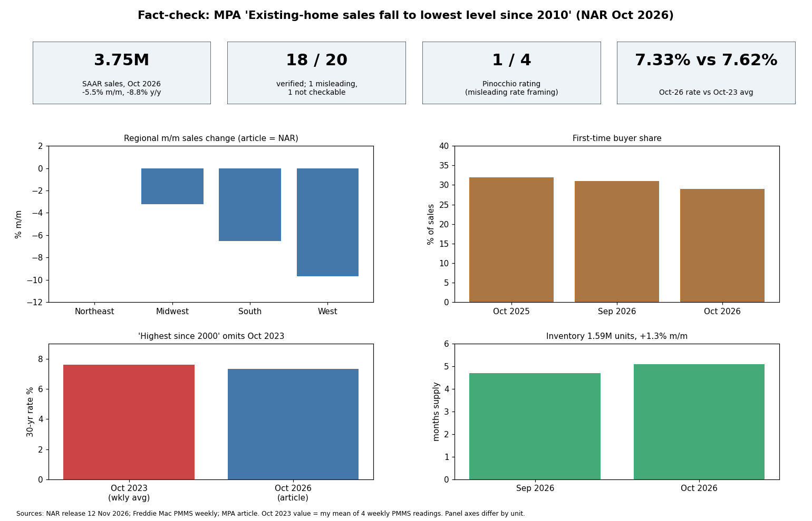

Every NAR-sourced number in the MPA piece (3.75M annual rate, -5.5% m/m, -8.8% y/y, regional moves, 29% first-time buyers, 1.59M inventory, $416,700 median, affordability 100.7) matches NAR's 12 Nov 2026 release. The weak point is the rate framing: NAR's own text says rates are the highest since 2000 except one month in 2023. October 2023 weekly PMMS readings were 7.49, 7.57, 7.63 and 7.79% (mean about 7.62%), above October 2026's 7.33%.
| Claim | Answer | Confidence |
|---|---|---|
| Sales 3.75M, -5.5% m/m, -8.8% y/y, lowest since Aug 2010 | Verified (NAR) | High |
| Regions: West -9.7, South -6.5, Midwest -3.2, NE flat | Verified | High |
| First-time 29% (31% Sep, 32% yr ago); investors 20% vs 16% | Verified; NAR category is investors and second-home buyers | High |
| Inventory 1.59M, 5.1 months vs 4.7; median $416,700 +0.4%, 40th month; HAI 100.7 vs 107.3 | Verified | High |
| 30-yr rate 7.33% (Freddie Mac) | Verified via NAR; weekly readings consistent | Medium |
| "Highest since 2000" | Misleading (Oct 2023 higher) | High |
| Shraybman quotes | Not checkable | n/a |